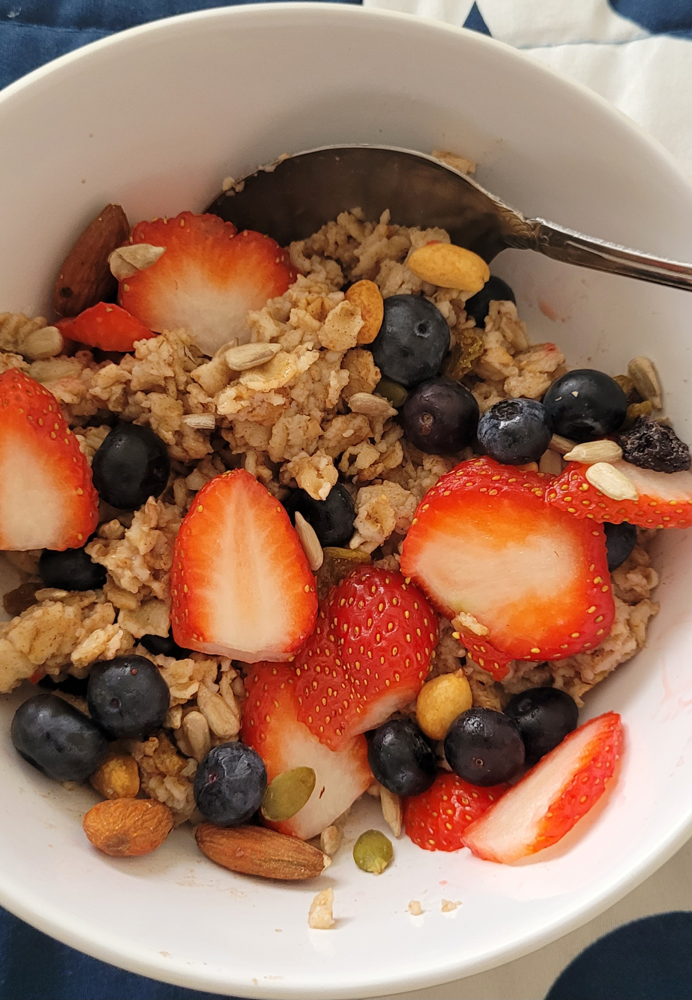

Delicious Oats Breakfast

Description
Oats make for the perfect quick, easy and healthy breakfast. This recipie will make your Oats taste delicious and enjoyable!
Ingredients:
- Old-fashioned Oats
- Salt
- Butter
- Cinnamon powder
- Fresh or frozed fruits
- Nuts and seeds mixed
Steps:
- Melt some butter in a non-stick pan
- Add Cinnamon powder to the butter and mix well.
- Add half a cup of oats into the pan and mix well on high heat for 3 minutes.
- Add a cup of water and a pinch of salt and mix well on high heat for 3 minutes.
- Lower heat to low and cook covered for 5 minutes.
- Let the oats cool off for about 5 minutes.
- Serve in a bowl and add fruits of your choice.
- Finally add some mixed nuts and seeds and enjoy!